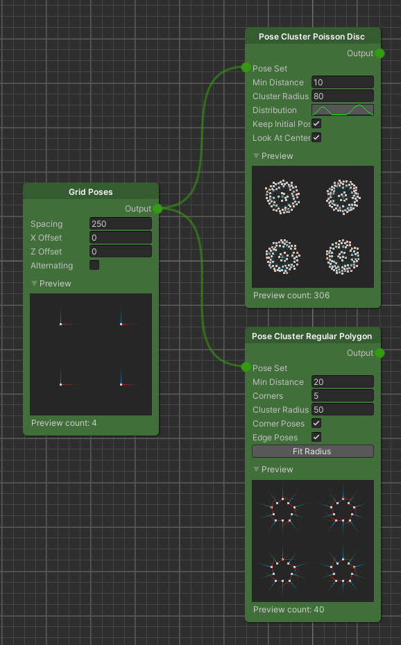
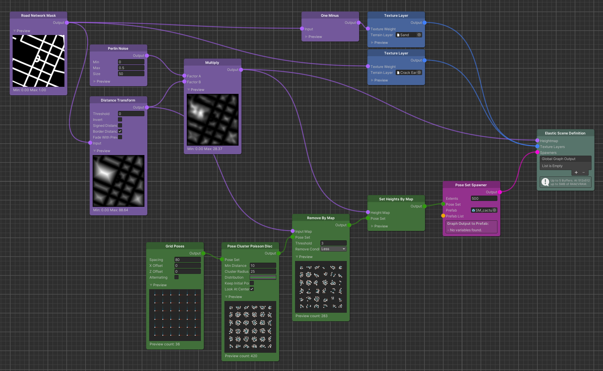
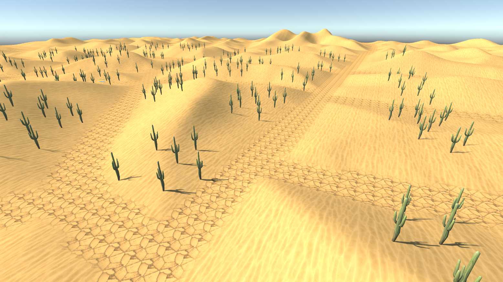
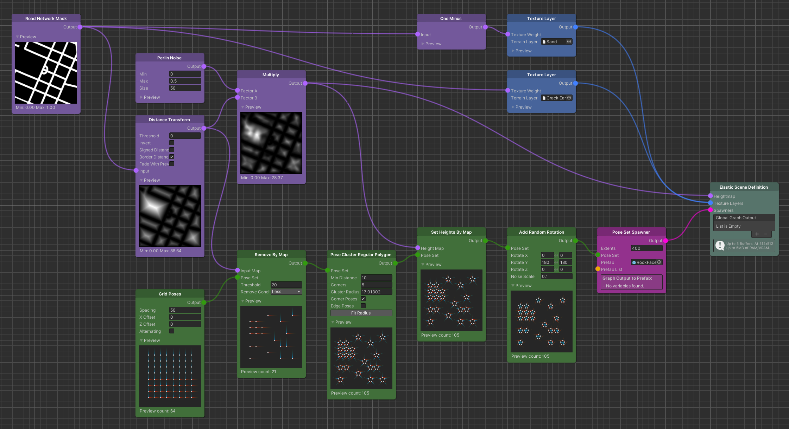
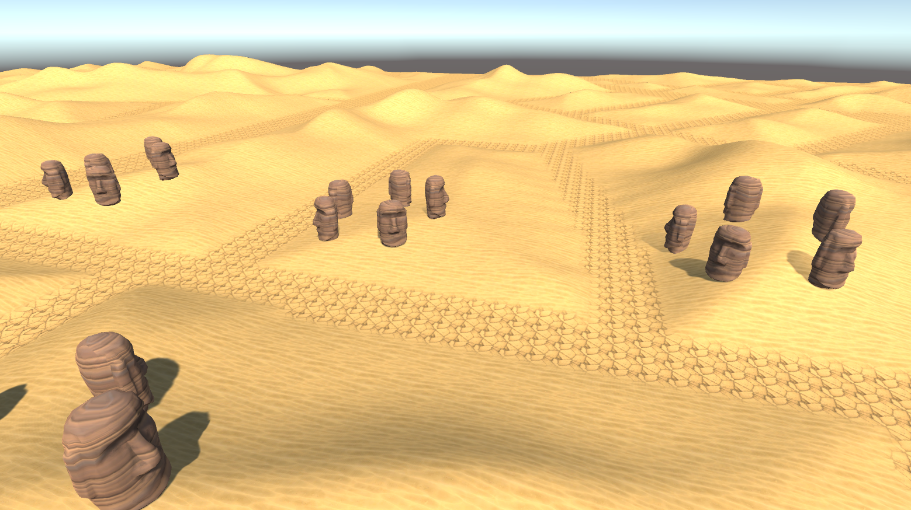

How-To: Pose Clusters
Beginner | 30 mins | Everyone
Introduction
Goal
In this guide we will learn how to us Pose Cluster Modifiers to generated new Poses from an initial set.
Prerequisite
- Familiarity with the node graph
Learning Path
Content
What are Pose Clusters?
The key concept of Pose Cluster nodes is to create synthetic data based on an initial set of Poses and a set of
user-defined parameters rather than depending on real-world locations.
In short, Pose Clusters create many Poses from a few.
World composition often requires that objects are placed in a pre-defined way, so that they arrange in an aesthetic
manner. For procedural generation this becomes inherently more difficult, since we cannot estimate the vast
possibilities of terrain shapes and spawning objects.
To achieve this, we introduce the Pose Cluster Pose Set Modifiers.
Pose Cluster nodes of the Elastic SDK implement dedicated algorithms, to create natural as well as artificial cluster
shapes. These algorithms are then parametrized by the user, to adapt to certain situations.
A special property of such clusters is the minimum distance that the generated Poses have to keep from each other. It
enables the user to parametrize cluster generation in a way that they create consistent shapes without overlaps.
An example for this could be trees or houses that should be distributed across an area.
Two prominent Pose Cluster nodes are the Pose Cluster Poisson Disc and Pose Cluster Regular Polygon nodes.

Pose Cluster Poisson Disc
A Poisson Disc Sampling algorithm at its heart uses a uniform random function to sample candidates for a cluster but implements an additional constraint, that is, a minimum distance that each candidate has to keep to its neighbors. Using the minimum distance constraint we can still take advantage of the randomly generated candidates but reject the ones that are too close to each other. This will ultimately result in a natural distribution.
In the following example use case we want to spawn a bunch of cactus Prefabs in a cluster.
To keep the setup simple we generate an initial set of Poses from a Grid Poses node and use the output as input for the
Pose Cluster Poisson Disc node to sample our clusters from. Next we set the Min Distance parameter. This distance
should not be smaller than the extents of our spawned objects, so that they do not overlap. After that we can change the
Cluster Radius parameter and observe how the Poses distribute over the changing area of the cluster.
Note
Since clusters have a certain radius, it is important to either choose a Grid Poses Spacing that is equal or greater than 2 * Cluster Radius or alternatively use a Remove Close Neighbours Modifier after the Pose Cluster node.
Before we plug the resulting Pose Set into a Pose Set Spawner node, we have to remove the ones that ended up on the road as well as setting the height of the remaining Poses to the height of the terrain. We do this by using a Remove By Map node and a Set Heights By Map node.


Tip
In case you want to modify the uniformity of the random sampling, there is an additional Distribution curve parameter. This curve was implemented to extend the basic Poisson Disc Sampling algorithm with a user-defined density function. While the x-axis displays the normalized distance [0..1] from the cluster's center to its edge, the y-axis shows the relative density at that distance.
Pose Cluster Regular Polygon
For the Pose Cluster Regular Polygon node the shape that the cluster takes is restricted by the properties of a regular polygon, so equal sides and inner angles. These properties are adjusted by the parameters the user sets. Note that the initial set of poses is discarded.
Imagine you want to spawn objects in a distinct formation that better reflects man-made structures. A perfect use case for the Pose Cluster Regular Polygon node.
We start again with a Grid Poses node, to create an initial set of Poses but this time we use a Remove By Map node right
after. Set the Threshold to the same value as your cluster radii are supposed to be large. This will ensure that we
only create full cluster shapes without road intersections.
Continuing with the Regular Polygon cluster node, we also have a Min Distance parameter. We set it in the same way as
for the Poisson Disc clusters, which means it should not be lower than the radius of the spawned objects.
Next there is a Corner parameter. This will determine the regular polygon shape. In this case, we set it to 5 which
means that the resulting shape will be a pentagon.
For the Cluster Radius we can choose the threshold that we set on the Remove By Map node. Optionally you can then hit
the Fit Cluster button, which will find the next closest radius that exactly fits our Poses with respect to the Min
Distance parameter. Uncheck Edge Poses to get rid of the shape's edges.
Lastly, we are setting the height of the Poses to the terrain's height and then rotate them by 180 degrees, since the generated Poses will face the cluster's center by default.


Summary
In this guide we have learned how to generate procedural Pose clusters from an initial set of Poses. We have implemented use-cases for both the Pose Cluster Poisson Disc node as well as the Pose Cluster Regular Polygon node. While the core concept of clustering Poses is the same for both nodes, we have also learned the different use-cases that each node might fit best.
Further Reading
- Pose Cluster Poisson Disc - Pose Cluster Poisson Disc node overview page.
- Pose Cluster Regular Polygon - Pose Cluster Regular Polygon node overview page.